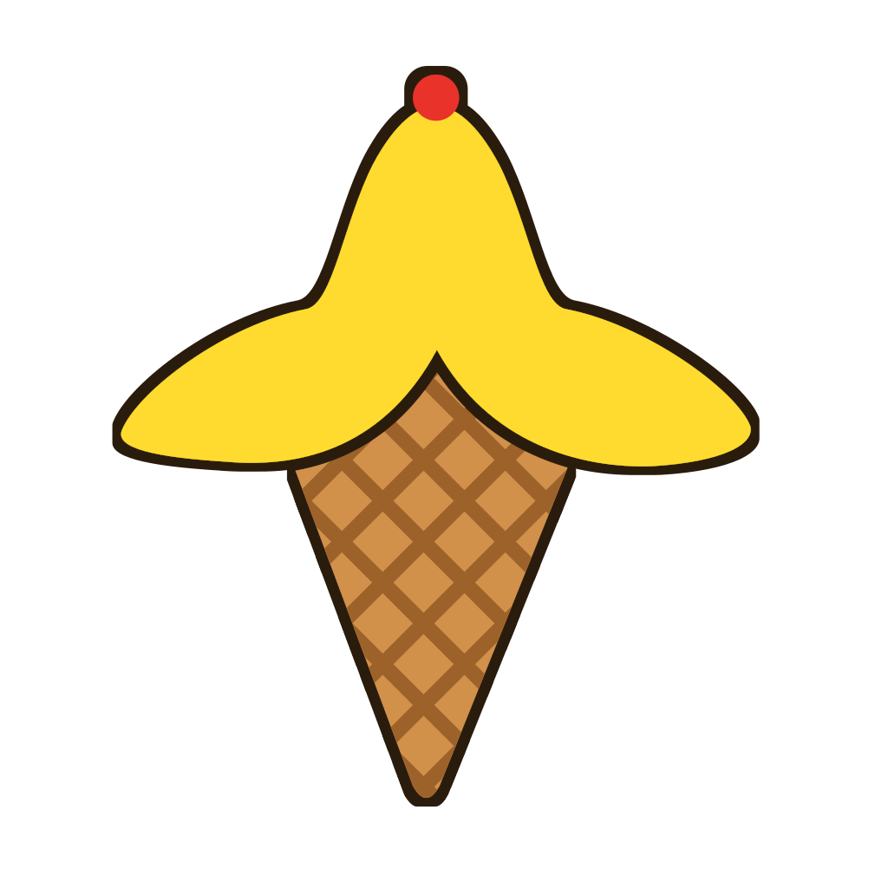
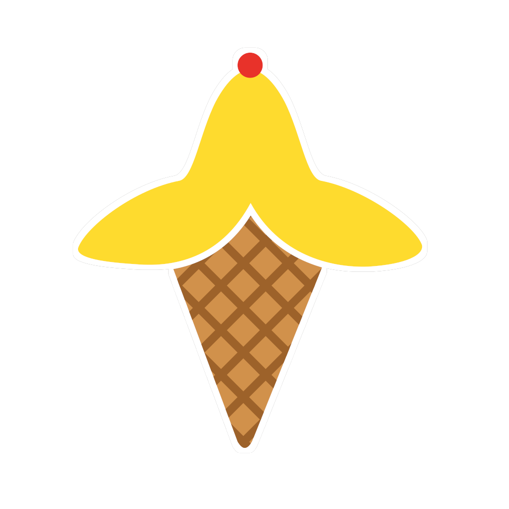
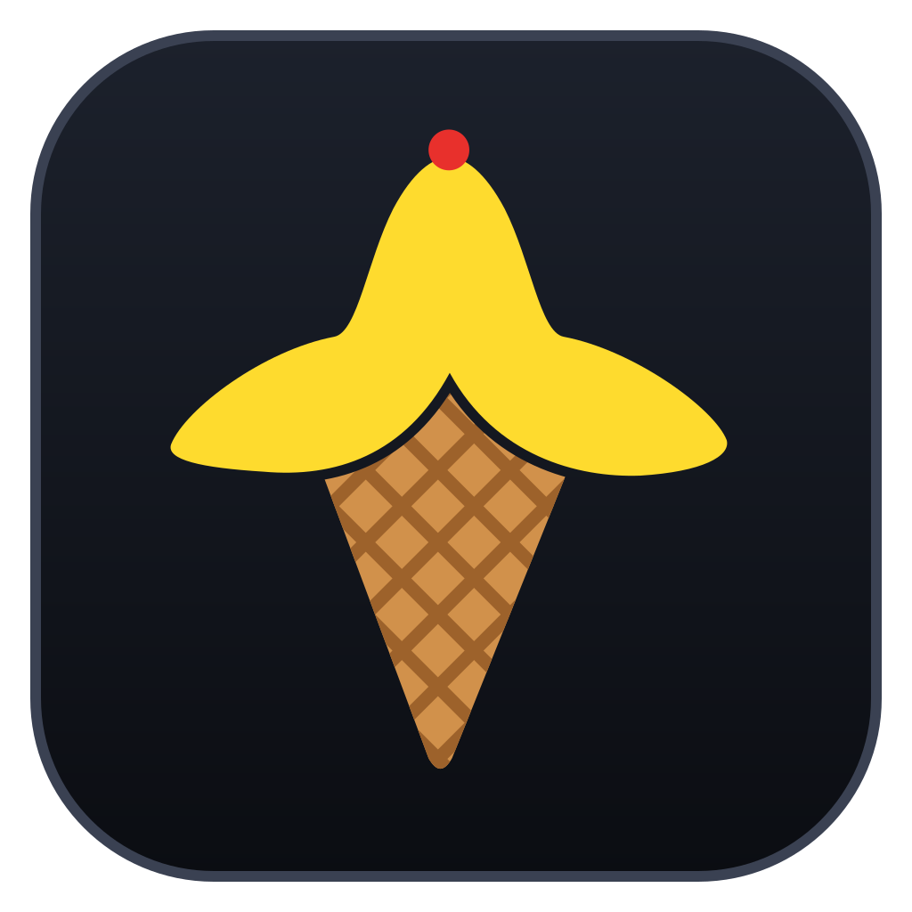
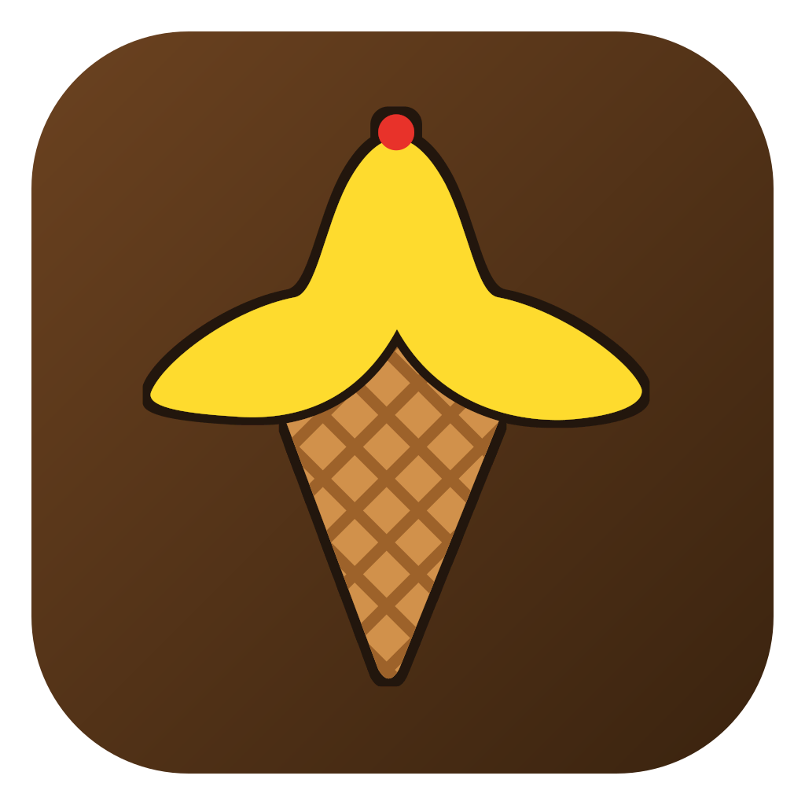
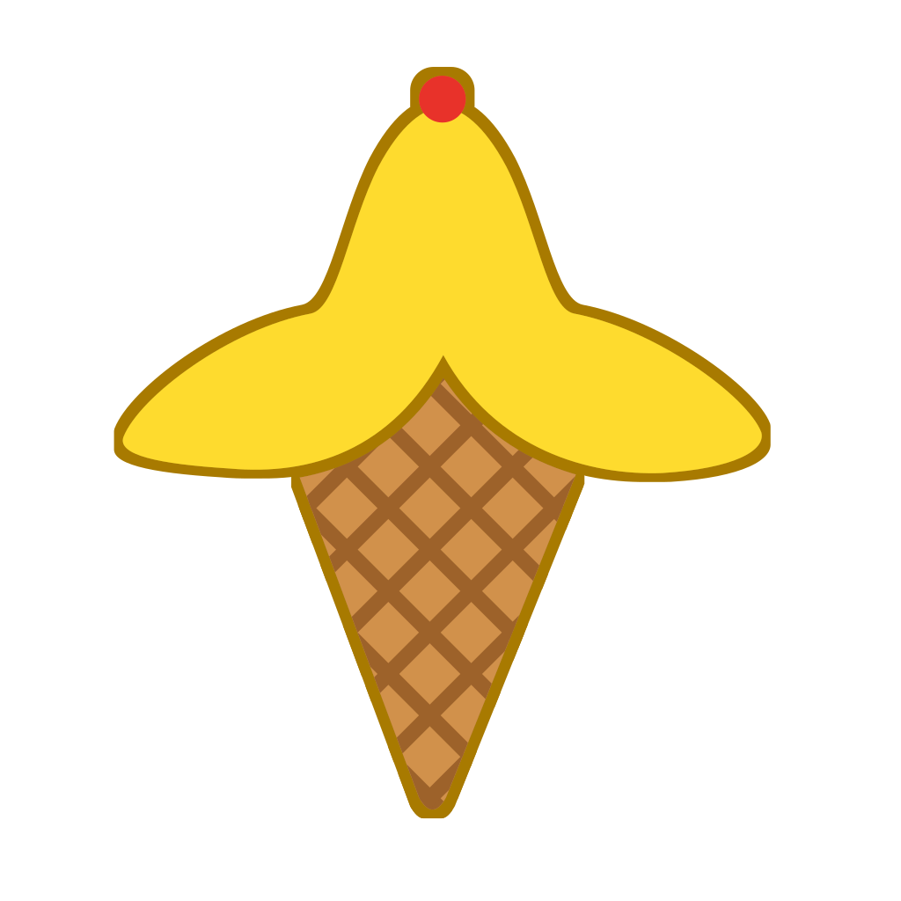

다크 작업 표시줄
48 · 32 · 24 · 16 px
라이트 작업 표시줄
48 · 32 · 24 · 16 px
라이트 + 강조색
48 · 32 · 24 · 16 px
1. 어두운 테두리
지금 모양 그대로, 바깥에 짙은 갈색 테두리. 배경은 투명

2. 스티커 (흰색 + 어두운 이중 테두리)
흰 테두리 바깥에 얇은 짙은 선. 어떤 배경에서도 윤곽이 보임

3. 어두운 둥근 사각 배경
앱 배경색(#11141B) 타일 위에 로고. 앱 화면과 같은 느낌

4. 어두운 원형 배지
원 안에 로고. 둥근 모양이라 다른 아이콘과 겹쳐 보이지 않음
5. 와플콘색 둥근 사각 배경
따뜻한 갈색 타일 위에 로고. 콘에 짙은 테두리를 더해 타일과 구분

6. 진한 노랑 테두리 (투명)
바나나와 같은 계열의 진한 금색 선. 가장 원래 모양에 가깝지만 밝은 배경에서 효과는 약함
